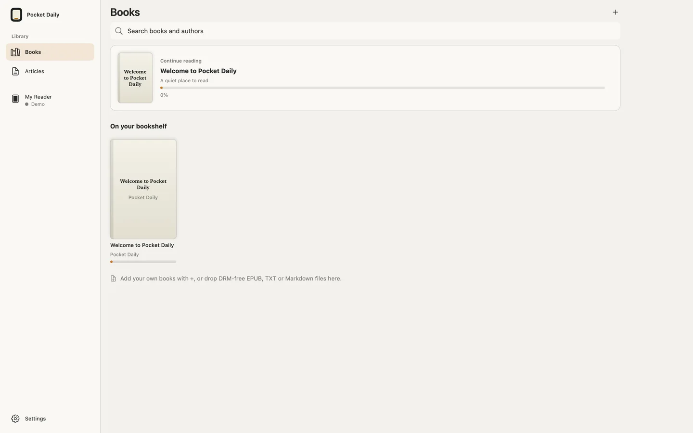
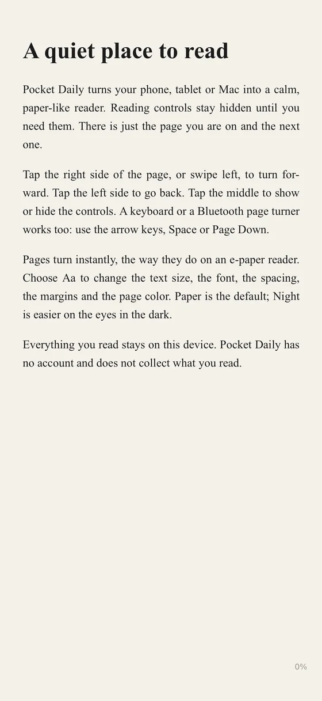
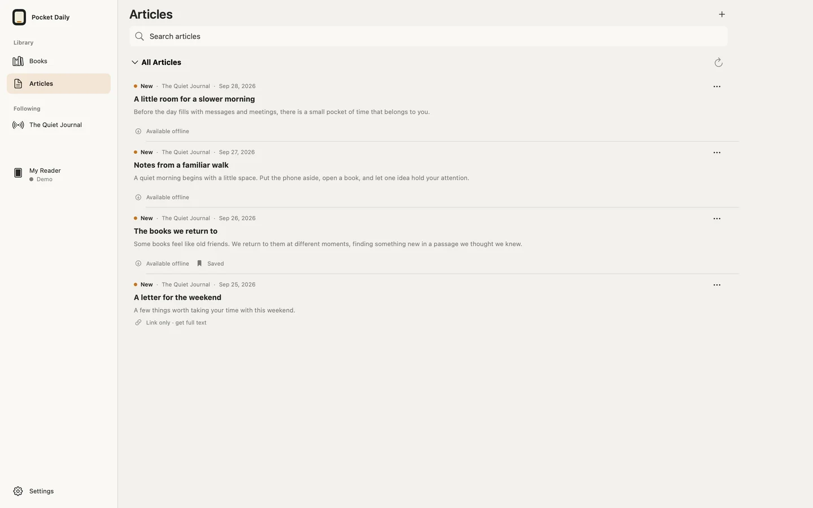
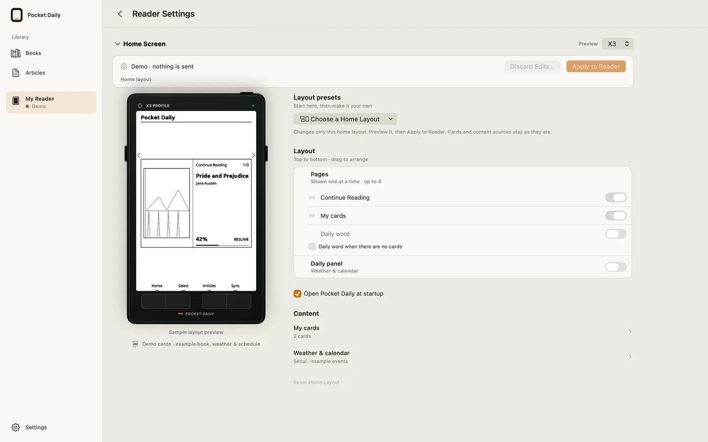

READING, AT YOUR PACE
읽던 책,
일상 속으로.
아이폰에서 한 장, 맥에서 한 장.
작은 리더기에서도 같은 책을 이어 읽으세요.
계정 없이, 리더기 없이도 시작할 수 있습니다. 내 책을 담고 읽는 일부터.
iPhone · iPad · Mac / 앱 배포 준비 중


DRM 없는 EPUB · TXT · Markdown계정·광고·앱 내 추적 없음책 읽기는 오프라인으로
01 / READ
페이지에만
마음이 머물도록.
책을 열면 읽는 화면이 먼저입니다. 글자 크기와 여백, 줄 간격을 맞추고 Paper·White·Night 중 편안한 페이지를 고르세요. 읽기 조작은 필요할 때만 나타납니다.
읽기 조작 알아보기 →02 / KEEP
지금 발견한 글을,
다음 읽을거리로.
공유 메뉴에서 글을 저장하거나 HTTPS RSS·Atom 피드를 추가하세요. 저장된 본문은 오프라인으로 읽고, 선택한 글만 책으로 준비해 리더기로 보낼 수 있습니다.
아티클 사용법 →
03 / CONTINUE
작은 리더기에도,
나만의 읽는 자리.
Pocket Daily 펌웨어가 설치된 호환 X3/X4에 같은 책을 보내고, 읽던 위치를 교환하세요. Home과 Sleep 화면은 미리 본 뒤 직접 적용합니다. 위치가 달라져도 확인 없이 페이지가 바뀌지 않습니다.
리더기 연결하기 →
MAKE YOURSELF AT HOME
첫 책부터 차근차근.
빠른 시작, 연결 방법, 읽기 위치 공유, 설정과 문제 해결까지 한국어·영어 가이드로 안내합니다.